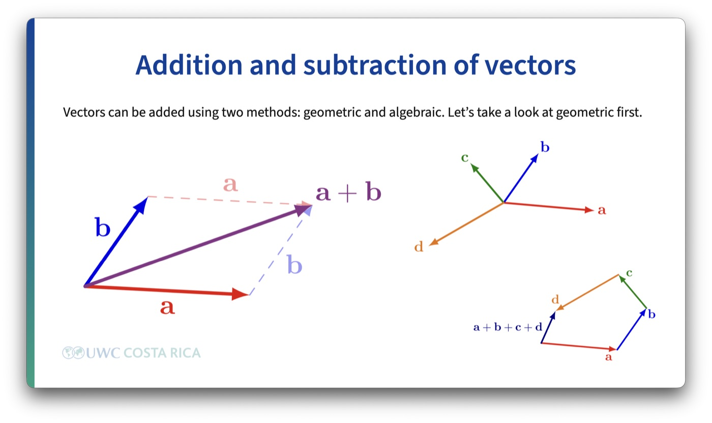
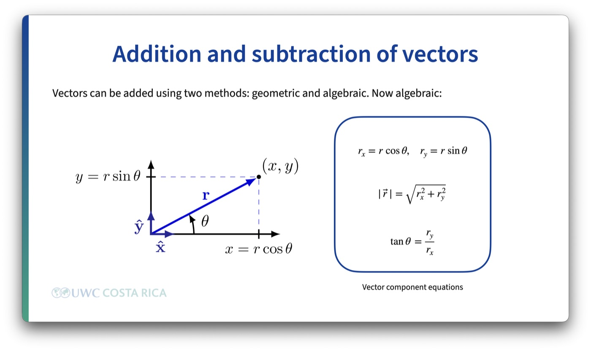

Vectors as a new mathematical object, the operations defined on them, and addition and subtraction worked two ways: geometrically, and through components, trigonometry, and the unit circle.
I open this lesson by saying plainly what role math plays in this course: it's a tool. Mathematics on its own is a much bigger and deeper subject than anything we'll touch here, and every so often we'll pause and look at a piece of that bigger picture, but day to day, this course uses math instrumentally, to describe and predict what physical systems do.
I frame it against something every student already did once. Years ago, you learned numbers: the object itself, then the rules for operating on that object, addition, subtraction, multiplication, square roots. Today I do the same thing with a new object, the vector. First the object, then the rules for what you're allowed to do with it.
I also put vectors on a hierarchy, so it's clear this isn't the end of the line. Scalars and vectors are the tip of the iceberg. Matrices come after them, and tensors after that, later on if you keep going in this direction. Nobody needs to know what a tensor is today. The point is just that today's new object isn't the last one you'll meet.
A scalar is a quantity with a magnitude and nothing else, a number and a unit. A vector is a quantity with a magnitude and a direction. Mass is a scalar: 2 kg doesn't point anywhere. Velocity is a vector: 2 m/s only means something once you say which way. Before doing anything with vectors, I give students the actual list of quantities from this course that fall on each side:
| Vectors | Scalars |
|---|---|
| displacement | distance |
| velocity | speed |
| acceleration | mass |
| force | time |
| weight | density |
| electric field | electric potential |
| magnetic field | electric charge |
| gravitational field | gravitational potential |
| momentum | temperature |
| area | volume |
| angular velocity | work / energy / power |
Notice how many of these come in pairs, distance and displacement, speed and velocity. Same underlying idea, but one of them carries a direction and the other doesn't. That distinction is going to matter for the rest of the course.
Vector algebra defines its own operations: addition, subtraction, scalar multiplication, the dot product, and the cross product. I list all five so students know the algebra doesn't stop at what we're doing today. The dot and cross products come back later in the course, in work and in magnetic force, but they're not part of this lesson. What we need today is scalar multiplication and the addition and subtraction of vectors.
Scalar multiplication is the simplest of the three: multiplying a vector by a plain number scales its magnitude, and a negative number also reverses its direction. Multiply a displacement vector by 2 and you get a vector twice as long pointing the same way; multiply it by \(-1\) and you get a vector the same length pointing the opposite way. Addition and subtraction take longer, because each one can be done two ways, geometrically and algebraically, and both need to agree with each other.
Geometrically, two vectors add tip-to-tail: draw the first vector, then start the second one where the first one ends, and the sum runs from the start of the first vector to the end of the second. The same rule extends to any number of vectors, draw them one after another and the sum is the vector from the very first tail to the very last tip, regardless of the order you add them in.
Subtraction is addition of the reverse: \(\vec{a} - \vec{b}\) is \(\vec{a} + (-\vec{b})\), where \(-\vec{b}\) is \(\vec{b}\) with its direction flipped and its magnitude unchanged.
Geometry alone gets awkward once you're adding more than two or three vectors, so I move to the algebraic version: breaking each vector into \(x\) and \(y\) components. For a vector of magnitude \(r\) at angle \(\theta\) from the \(x\)-axis, \(r_x = r\cos\theta\) and \(r_y = r\sin\theta\).
Before students just trust those two formulas, I put the unit circle back on the board. It's the reason cosine gives you the horizontal piece and sine gives you the vertical one, and it's also what tells you the sign of a component in each quadrant, without memorizing a separate rule for every quadrant. A vector of length \(r\) at angle \(\theta\) is just the unit circle scaled by \(r\): its tip sits at \((r\cos\theta, r\sin\theta)\), the same \((\cos\theta, \sin\theta)\) coordinates you already know from the unit circle, stretched by \(r\).
Once every vector in a sum is broken into components, addition becomes arithmetic: add all the \(x\) components together, add all the \(y\) components together, \(R_x = \sum r_x\), \(R_y = \sum r_y\). To get back to a single vector, recombine with the Pythagorean theorem for the magnitude, \(|\vec{R}| = \sqrt{R_x^2 + R_y^2}\), and the inverse tangent for the direction, \(\tan\theta = R_y / R_x\), checking which quadrant \(R_x\) and \(R_y\) actually put you in, since the inverse tangent alone can't tell a first-quadrant angle from a third-quadrant one.

